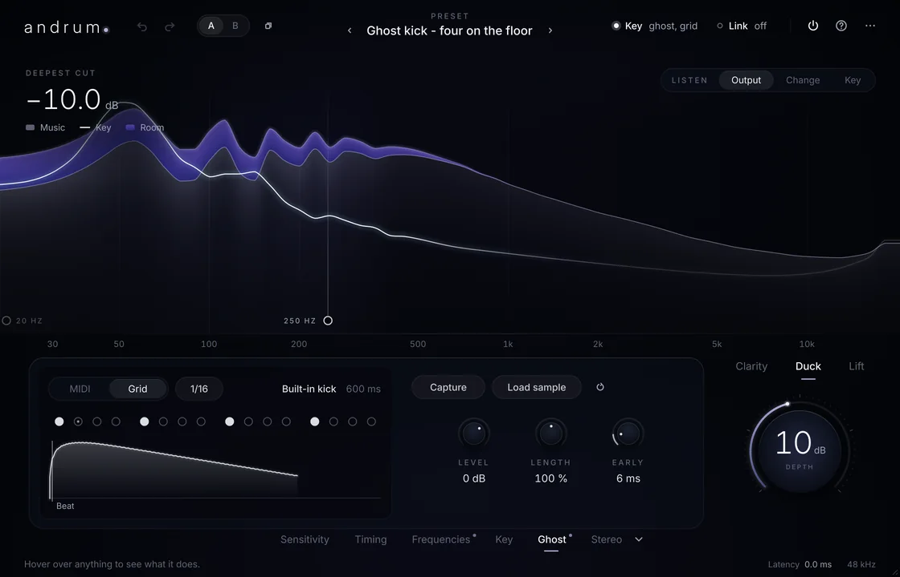

In your DAW
Vocals over pads and walls of guitars. Rap over a dense beat. A kick that punches through the bass, with Ghost Key making room on the beat and no routing at all. Reverb that steps back under the words and blooms in the gaps.
Logic Pro, Ableton Live, FL Studio, Cubase, Studio One, Bitwig Studio, Reaper and GarageBand.